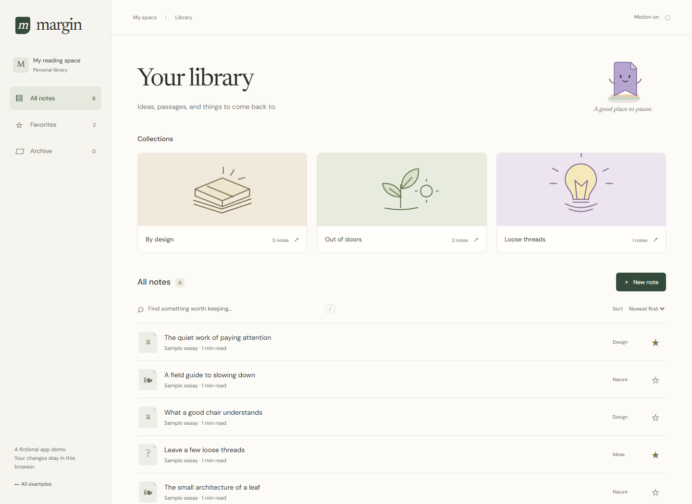
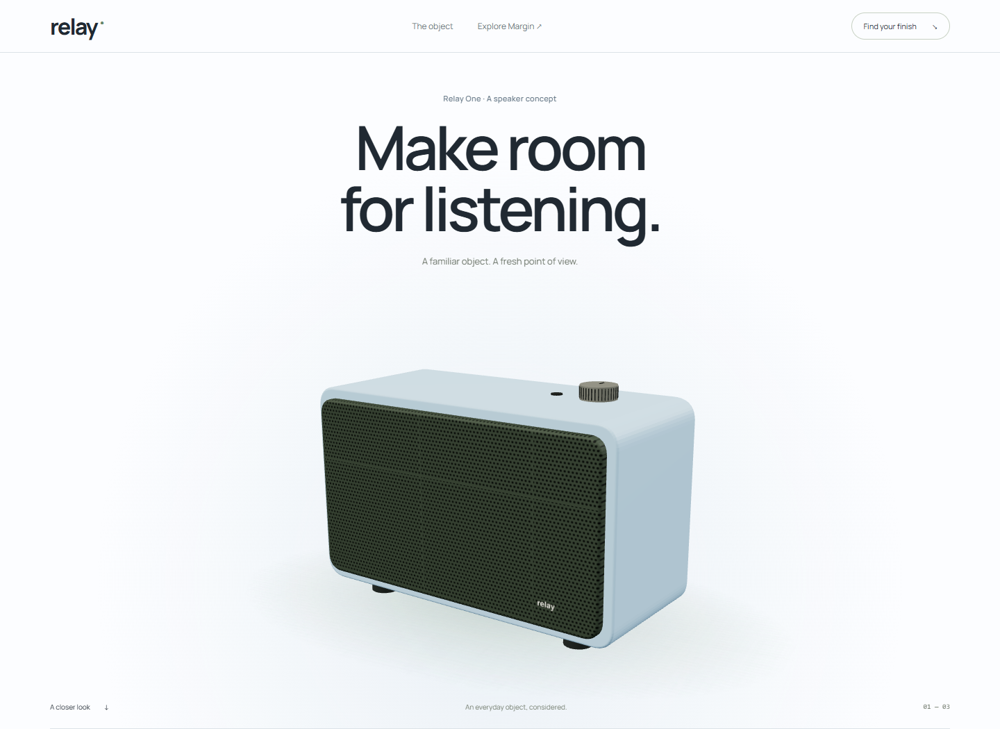

Different worlds.
Considered details.
A quiet place to collect ideas. An object worth a closer look. Two frontends with their own typography, behavior, and point of view.

Margin
A reading library with a little character.

Relay
One object. Three layers. Your point of view.